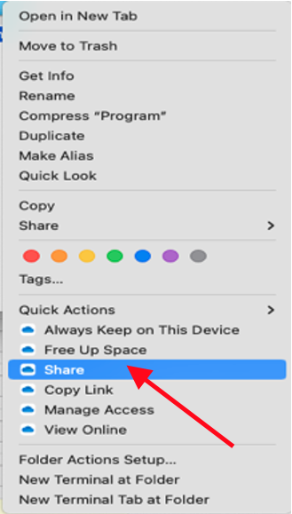

4 Data Request SOP
4.1 Creating a New Data Request
- Navigate to the ‘Mesulam Center Data Requests’ database in REDCap.
- Under the ‘Data Collection’ tab on the left panel, select ‘Add/Edit Records’.
- Click the large green ‘+ Add new record’ button. This will create a new Record ID and allow you to select the ‘Data Request’ and ‘Status’ Instruments.

4.2 Fill out the Data Request Form
- Select the Data Request Instrument button under the Data Collection Instruments.
- Fill out the ‘Request Information’ and ‘Requestor Information’ Sections.
- Enter the Date of request, Requestor name, and Requestor email.
- Enter the names of anyone else involved with or knowledgeable of the request.
- Select the type of Data Request.
- Collaborative Application – ALWAYS begins at Collaborative Applications and will autofill. NEVER manually selected.
- Internal Data Request – most common and encompasses all data requests within the Mesulam Center that do not require a Collaborative Application
- Database Change/Creation – select when adding or changing fields within an existing database or creating a new database.
- Enter all studies and grant numbers that will be associated with this data request in the free text box.
- Indicate if there is potential for a publication.
- Fill out the ‘Request Data’ Section.
- Write a brief description of the data request. This should be a few sentences about what is needed for the data request and, if known, why it is being requested.
- Enter a short description of the request. This should be a few words and is used to create the file name where all documents for this data request will be stored. Separate words with underscores (Test_Data_Request).
- For Data Management files, it is best to access them through your system’s local OneDrive. If you have not already done so, download the Data Management – Data Requests folder to your local drive by following instructions in the ‘SharePoint SOP’.
- Create a new folder in the Data Requests Sharepoint. Copy and paste the calculated ‘File name’ to name the new folder. This is where all files for this data request will be stored.
- Select the type(s) of data needed for the request.
- For each type of data requested, fill out the additional fields.
- Select the UDS version(s) needed.
- For current ADRC REDCap data, select UDS3.
- For historical ADRC data in StudyTracker, select MDS/UDS1/UDS2.
- Select the location(s) of the raw data for the request.
- Fill out the ‘Request Tagging’ Section.
- Select an ‘Impact/Need’ score on the slider scale.
- Low Impact/Need – projects that are not of immediate concern and have low impact on future research and analyses; there may be no deadline for completion.
- Medium Impact/Need – projects that need to be completed, but not as urgently as Maximum Impact/Need; may have a longer deadline before completion is due.
- Maximum Impact/Need – project completion is essential for future research/analyses; may have a strict deadline for completion.
- Select if there is any concern about the completion of the project.
- If there is a real concern that the completion of the project may not be possible, it will be assigned a lower priority. Time spent should be prioritized to projects that can be completed.
- Select the ‘Scope’ of the project.
- Low Scope – little to no changes to procedures/methods/protocols; implementation can occur immediately or with little to no discussion.
- Medium Scope – slight changes to procedures/methods/protocols; discussion with other teams may be necessary before implementation can occur.
- Maximum Scope – major changes to procedures/methods/protocols; may require training or coordination with other departments before implementation can occur.
- Select the approximate total time ‘Duration’ in hours that will be spent working on this project.
- The above fields will return a priority score, which can be used to prioritize all in-progress projects.
- Select the reason(s) for the scope choice.
- Excel project
- Single Database Project
- Multiple Database Project
- Simple Criteria
- Complex Criteria
- Historic Data (pre-2015)
- New Methodology Needed – (developing new system/analysis/protocol)
- Collaboration Needed – multiple departments or collaborative application
- Documentation (SOP)
- Report/Visualization
- Data Pull
- Data Check
- Data Import
- Database Harmonization
- Database Creation
- Database Modification
- Referral Pull - (pulling demographic information/names to send to collaborator to use the referrals as participants – REQUIRES COLLABORATIVE APPLICATION)
- Select an ‘Impact/Need’ score on the slider scale.
- Fill out the ‘Storage Locations’ Section – this can be done immediately or when the data request is complete.
- Paste the link to the Data Request folder.
- In Sharepoint, left click on the folder of the data request. Select ‘Share’. A window will pop up with options to send the link to the folder.
 - Select ‘People you specify can edit’ under the Copy link section.
- Select ‘People with existing access’. Click Apply.
- Copy the link and paste into the corresponding box.
- In Sharepoint, left click on the folder of the data request. Select ‘Share’. A window will pop up with options to send the link to the folder.
- Paste the link to the Collaborators folder.
- Follow steps 5a-i. through 5a-iv for the Collaborator folder.
- Paste the link to the Collaborators data file.
- Follow steps 5a-i. through 5a-iv for the Collaborator file.
- Write up a brief description to document the data request OR Paste the link to the Documentation file in the Documentation box.
- For additional information, see 2.6 Documenting the Data.
- If Pasting a link, follow steps 5a-i. through 5a-iv.
- Paste the link to the Data Request folder.
- Always mark the Form Status ‘Complete’. Save and Exit Form.
4.3 Fill out the Status Instrument
- Select the Status Instrument button under the Data Collection Instruments.
- After creating a data request, select the appropriate status.
- Enter the Percent Complete.
- If not yet started, enter 0.
- Update the Percent Complete as progress is made for the data request.
- The NetID will auto-populate for the person who is filling out the form. This can be changed manually as needed.
- Enter the study/department(s) of the staff member who is completing the request.
- Enter any notes about the status of the data request.
- Always mark the Form Status ‘Complete’. Save and Exit Form.
4.4 Completing the Data Request
- After the Data Request Forms have been completed on REDCap, pull the required data.
- Save all files in the corresponding Data Request folder.
- If the Data Request is for a Collaborative Application, create the Collaborator folder within the Data Request folder. Store all files that will be shared with the Collaborator within the Collaborator folder. They will only have access to this specific folder, not the entire Data Request folder.
- Create a Data Dictionary – this should be stored in the Collaborator folder if there is one; otherwise, it can be stored in the general folder for this Data Request. See Step 3 for steps to create a data dictionary.
4.5 Creating the Data Dictionary
Note: The Data Dictionary will store all variables for the specific Data Request with information about each. This step should be completed for both internal data requests and collaborative application data requests to inform the receiver of the data on each of the variables.
- For each database used for the Data Request, navigate to the corresponding ‘Dictionary’ page which can be found on the left panel of REDCap.

- Once on the Data Dictionary page, select ‘Download the current Data Dictionary’. A .csv file of all variables in the database will be downloaded. Open the downloaded file.
- Filter the Data Dictionary and delete any unneeded variables for the data request.
- Save the Data Dictionary in the Data Request folder, which should now consist of only the variables from a single database that were required for the Data Request.
- Compile all necessary variables from the database into a single .csv or .xlsx file by following the ‘Data Dictionary Template’.
- The headings should ALWAYS appear in this order with the Column Headers on line 13 and the first variable on line 14.

- The headings should ALWAYS appear in this order with the Column Headers on line 13 and the first variable on line 14.
- If more than one database was used for the Data Request, repeat steps 1 – 4 for each database, adding each set of new variables to the same Data Dictionary.
- When using multiple databases for a data request, create new ‘Variable Name’ columns, specifying which database the variable came from if they are not stored in all databases used.
- Save the Data Dictionary file with the following format: Date_Data_Request_Name_Metadata. Ex: 2023_05_23_Data_Request_SOP_Metadata.
4.6 Documenting the Data Request
The purpose of the data documentation for a Data Request is to explain everything that was done. This should include:
- How the data was pulled – which databases were used; specify if the data was pulled via a REDCap report, through the API, or through some other method.
- What data was pulled – which variables were pulled from each database.
- What was done to the data after it was pulled – additional filtering or sorting, adding comments/variables, calculations, etc.
A. If the documentation only consists of a few sentences or a few short paragraphs, it can be entered directly into the Data Request Form Documentation textbox.
B. If the documentation requires a longer explanation, create a word document and paste the link to the documentation into the Data Request Form Documentation textbox.
4.7 Sending Data Out
- Create a new folder within the specific Data Request folder in SharePoint with the following format: Date_MesCtr_Data_Request_Name_Dataset. Ex: 2023_05_23_Data_Request_SOP_Dataset.
- Move the finalized data dictionary to this folder.
- Add the data to this folder with the following format: Date_Data_Request_Name_Data. Ex: 2023_05_23_Data_Request_SOP_Data.
- Note: the data should be stored within a .csv or .xlsx file, or both.
- Within this folder, add another folder for all Documentation. Title this folder ‘Documentation’.
- This is where the Documentation, scoring guidelines, and any other manuals for the data request will be stored.